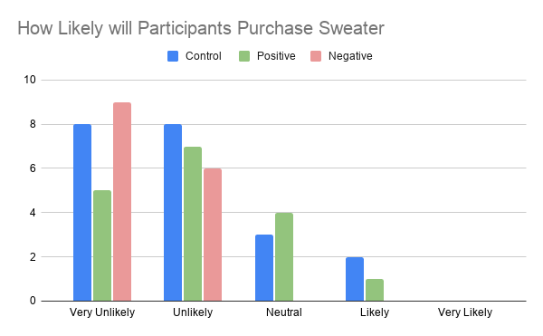
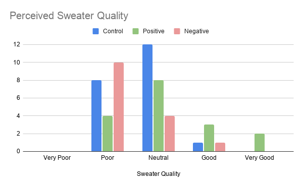

My Role
Data Analyst
Time Range
6 Weeks (Winter 2020)
Team
Hannah Modder, Sally Tang, Zhen Xu, Estefany Hernandez-Lopez
Navigation
Introduction
With the overwhelming emergence of e-commerce over the past decade, online reviews have been an honest, tell-tale contributor to consumer’s purchasing decisions. According to the Local Consumer Review Survey by Bright Local, 97% of consumers read online reviews when making purchasing decisions. The difference between a positive and negative review can truly make or break a purchase, a visit or an experience from a consumer. Oftentimes, due to choice overload, it is difficult for consumers to narrow down which of the exact same product they would like to order, that’s where reviews come in. They can tell consumers about a product's fit, quality, accuracy and durability. Therefore, my team and I designed a study to analyze whether or not there is a correlation between a product with positive customer reviews and how likely they are to purchase the item.
One of the possible influences causing this purchasing behavior is social influence. Social influence can play a major role in a customer's trust in reviews. Through taxonomy of power, fellow consumers and reviewers have informational/expert power since they have already received the product or service from a company and therefore have already interacted with it. Reviewers can positively use this information in a variety of ways, we discuss these techniques further in our marketing implications section.
Our team assembled a research design to analyze how consumers feel about three different conditions; a sweater being sold online with no customer reviews (the control), a sweater with positive reviews and a sweater with negative reviews. We follow this up by asking consumers a series of questions about the sweater as well as their general opinion about online reviews in regards to purchasing decisions. Lastly, we ask the participants how likely they are to purchase the sweater based on the reviews. Based on social influence, our hypothesis is that the condition with mostly positive reviews will have a higher number of purchases, the no reviews condition will have the second most number of purchases, and the negative reviews condition will have the least number of purchases.
Method
To test out our hypothesis, we used similar techniques of the experimental design to collect the data. For this study, the product we examined is a unisex sweater shown in all 3 conditions.

The manipulation variable is the type of customer review, either no customer review (control group), positive customer review with the overall rate of 4.6 out of 5, or negative customer review with the overall rate of 1 out of 5.

Though a between subject design is subject to a higher variability, we chose this type of design in comparison to the within subject design because it is not theoretically applicable to expose the participants to all conditions. Because we decided to do a between subject design, we created three separate forms in a survey format to collect the data, so that we were able to send out the forms to different individuals, ideally using random assignment. All three forms start with general questionnaires about the participants’ preferences regarding buying clothes online, and how they interact with customer reviews. Both the positive and negative customer review forms ask questions specific to the customer reviews they got exposed to and measure their perception of the customer review’s helpfulness and reliability. The control group is still asking in a more general term. Lastly, the three forms measure the likelihood of participants to purchase the sweater and their perception of the sweater’s quality. We collected data from fifty-three participants: 21 participants in the control group, 17 participants in the positive customer reviews, and 15 participants in the negative customer reviews.
In addition, the questionnaire’s design includes a validation point, such that there is a recall question asking for the overall customer rating provided to each sample to make sure the participants are paying attention throughout the questionnaire. Out of the participant pool, 95% of the participants recall the approximate rating.
Analysis
Before going in depth to analyze the data between samples, some general trends observed across the three sample groups revolve around how much the participants rely on the customer reviews, how much they contribute to the customer review portion, and the average customer review posts they read before making a decision on their actual purchase. In general, participants tend to read through customer reviews when they have the intention of purchasing products online. Only 24.5% of the participants responded that they rarely read through the customer reviews. An interesting phenomenon is that while almost 75% of the participants read through the reviews, there was only 1 out of 53 participants who answered that he/she will “always” leave a customer review after every online purchase. The other participants will either “never” (60% of the overall participants pool) or “rarely” (34%) leave a customer review.
As mentioned above, those who will leave a customer review are assumed to be very satisfied with their products or very dissatisfied with the product. The general trend supports this assumption, such that those who leave a constant review are treated to be outliers of the normal population. Another valuable general trend that we observed is that participants across the sample groups, on average, need to read eight review posts before making a purchasing-decision.
Correlations Helpfulness and Reliableness
An interesting phenomenon observed within each sample is that there is a medium positive correlation found between the helpfulness and reliableness in the control group (where we asked the participants about the generality of customer review’s helpfulness and reliableness), but not the positive and negative samples (where we asked the participants specific questions regarding the reviews they were exposed to). There is a medium positive correlation in the control group between the helpfulness and reliability of the customer review, and it is less likely to occur by chance alone (r = .46, p < 0.05). The correlation shows that participants who think the reviews tend to be helpful also considered them to be reliable. Whereas, for the other two samples, there is insufficient evidence to support the similar correlation relationship between the two variables given the positive sample group only generated the result of r = .09, p = .72, and the negative sample group generated the result of r = .29, p = .29. In both cases, we fail to reject the null hypothesis which states that there is no correlation between the participant’s opinions about the review’s helpfulness and reliability.
Impact on Purchase Decision
The bulk of this project’s hypothesis is that participants would be more likely to purchase a product with positive customer reviews. In the control group with no customer reviews, we expected participants to remain neutral in making a decision to purchase the sweater.
The figure above displays this expectation is mostly true, but an interesting pattern to note is that other than neutral, participants also responded that they were “unlikely” to purchase the sweater. This implies participants are more doubtful about committing to make a purchase decision when there are no reviews.
For the other two sample groups, the expected patterns were observed. For instance, the negative customer review’s sample group tends to cluster in the group of unlikely and very unlikely to purchase the sweater. It is important to note that participants in the negative reviews group reported that on average they read through 5.56 customer review posts before making a purchase decision. Since the form only provided three customer reviews, their reason for not purchasing the sweater could be related to the lack of number of customer reviews. Overall, the trend for the negative reviews with regards to purchasing-decision does not account for confounding variables. Conversely, the sample group with positive reviews displayed a slight increase in likelihood of purchasing the sweater. Though this group had the highest level of likeliness to purchase the sweater, the differences are marginal. In fact, if we consider the sample size and other limitations, we do not have sufficient evidence to infer that the positive reviews had a statistically significant impact on purchasing decisions.
Impact on Perceived Sweater Quality
Though we did not find enough evidence to reject the null hypothesis that customer reviews did not have an impact on participants’ purchase decisions, the data suggests that the customer reviews had a potential impact on the perceived quality of the product.
The figure above shows that in the control group, the responses to perceived sweater’s quality cluster around neutral; those of the negative sample group cluster around poor and very poor; and the positive sample group shows a distinctive response of good and very good quality of the intangible product. Unlike the likeliness of purchasing decision, the perceived product quality figures show a more distinctive difference rather than a marginal difference, given that there’s less overlap responses in each sample. In addition, when participants (negative review group) were asked if the sweater was reasonably priced, a majority of the participants answered “no”, which is consistent with the overall perception on quality of the sweater. This is important because it shows that the perceived quality can impact the amount the participant is willing to pay for the sweater.
Discussion
Through the data analysis, we can conclude that there is not enough evidence to support that the customer reviews had a direct impact on consumers’ purchasing decisions. However, the data suggests that the customer reviews had a direct impact on the perceived quality of the product.
Marketing Implications
While the purchase decision itself may be affected by several other factors, brands can utilize positive reviews to their advantage. One potential strategy is to focus on fulfilling the customer review’s content page. As we concluded through the data, even if most online shoppers will read through and rely on the customer reviews, most of them are not inclined to leave a review themselves. This suggests that in order to successfully implement the strategy, the marketer needs to incentivize consumers to leave customer reviews. Some methods include offering discount codes, free items and samples, or exclusive deals. Afterward, the companies can verify that the review has been left via email before sending the verification codes to the participating consumers. This works because it will increase a consumer’s likelihood to make future purchases utilizing their discount code. One important consideration is not to abuse the practice of using monetary incentives to avoid the chance of decreasing the review’s reliability from the consumer’s perspectives.
Limitation
Throughout this research, there are some potential limitations that may mitigate the accuracy of the results. First of all, the total sample size consists of only 53 participants, which might limit the overall statistical power of the research. The ideal solution for future research is to increase the sample size (approximately 200 or more participants). With this increased size sample, the research is more likely to detect an effect given that the effect is present. The limitation revolves around the sample size and is not able to implement a complete randomization given that we collected data from the convenient sample. In addition, we collected a different number of responses for each group, which means the averages have a different impact since a larger sample size means a more accurate mean value. Also, in smaller sample sizes, we must account for the outliers that skew our data. From the dataset, we calculated that within the participant pools across sample groups, the average age of the participants is approximately 20 years old who are mainly college students. We may have been able to gather more valuable data had we explored a sample with a wider variety of age groups. We could have explored other options to gather data from more age groups such as emailing UCSD RADY students (graduate students) or staff to compare the difference between age groups in regard to online decision-making. Another limitation was that the negative review group has a different response scale for the questions in which participants were asked to describe the quality of the sweater.
The control group and positive review group uses a scale of 1 (very poor) to 5 (very good). This is important because if we wanted to compare the results to one another, the scales do not allow us to make a more precise interpretation since the positive review group has less options (poor, good, could not tell). Since these two scales have different meanings there is a chance that we may incorrectly compensate the scales, therefore distorting the data.
As mentioned above, one primary limitation of a between-subject design is a higher variability due to individual differences. For this project, each participant is subject to their own preferences and liking, and we are unable to control these preferences within the participant pool. For example, a participant might have responded “unlikely” when asked how likely they would be to make a purchase because they dislike the product in general. For future research, using a variety of different products might help to offset the influence of varying preferences. Lastly, from the data analysis, we discovered that participants need to read (on average) eight customer reviews before making a purchasing decision. This may suggest a potential insufficient number of reviews in the experimental conditions. In fact, the forms we sent out for both positive and negative customer reviews condition only portray 2 reviews. The participants might think there are not enough reviews for them to formulate an assertive decision instead of the review's contents.